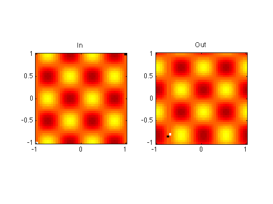

Example usage of function shiftmatrix.
Author: Shalin Mehta (c) 2011. shalin.mehta@gmail.com
xystep=0.05; x=-1:xystep:1; [xx yy]=meshgrid(x); in=sin(2*pi*xx).*cos(2*pi*yy); in(1,1)=2; in(end,end)=-2; % Mark the first and last pixels. figure(1); clf; colormap hot; set(1,'defaultaxesfontsize',14); subplot(121); imagesc(x,x,in); axis square; axis xy; padval=0; title('In'); shiftvec=[0.3 0.2]; %0.3 distance to right, 0.2 distance up. out=shiftmatrix(in,xystep,shiftvec,'circular'); subplot(122); imagesc(x,x,out); axis square; axis xy; title('Out');